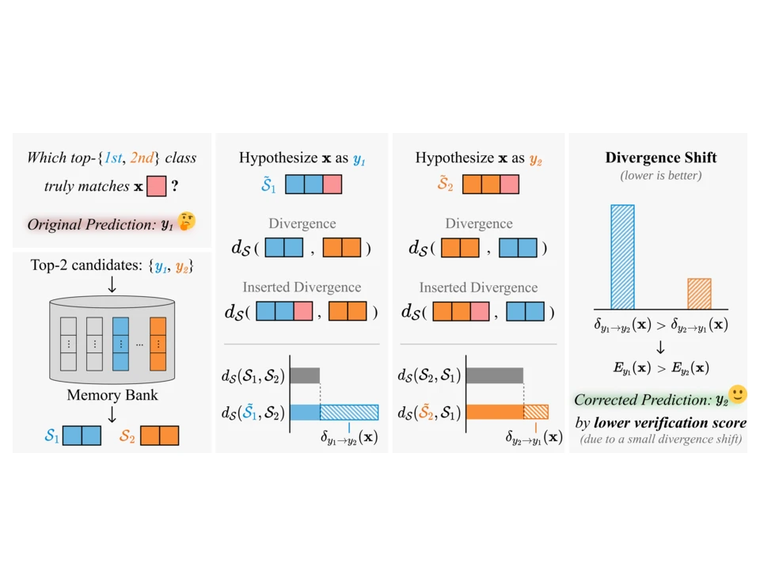
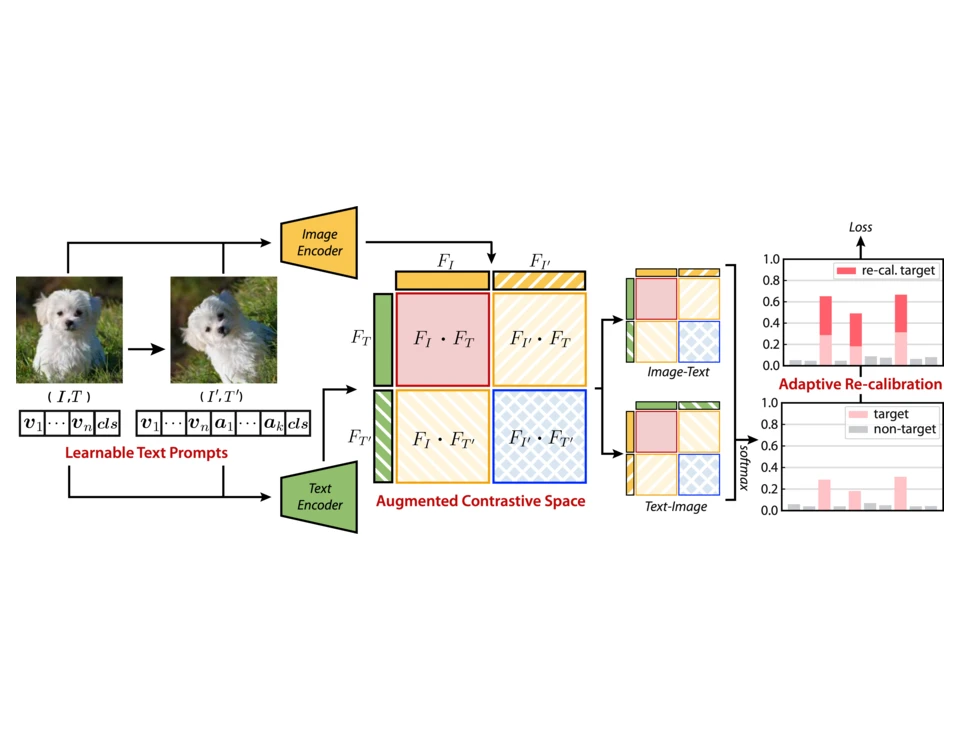
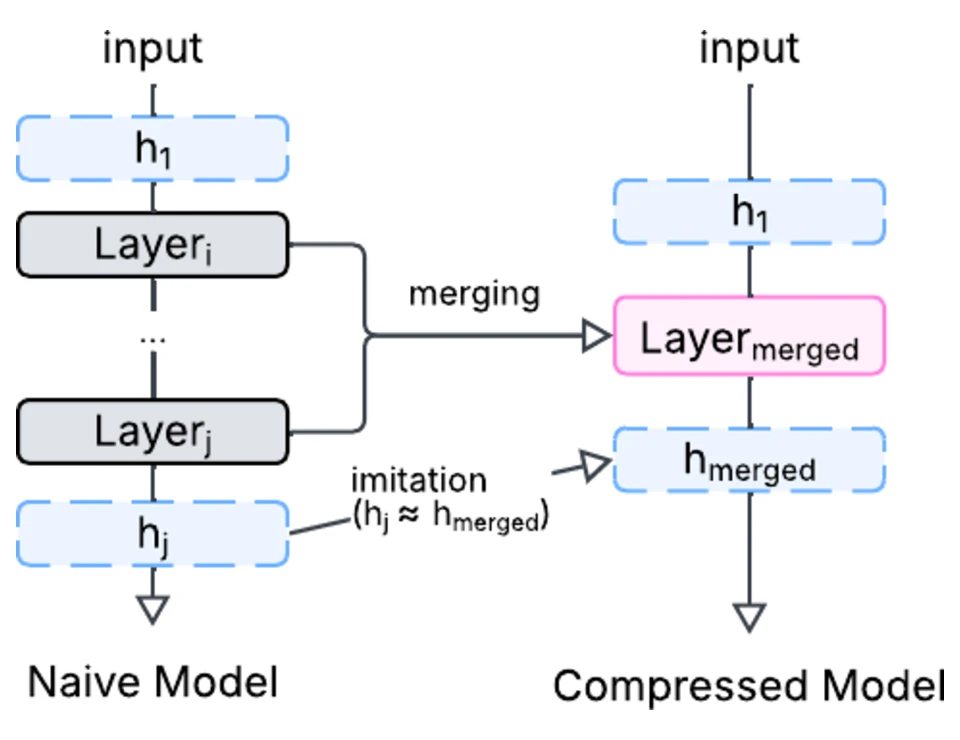

I am Seunghun Kang, a Ph.D. student in the Department of Artificial Intelligence at Ajou University in Suwon, Korea, where I am advised by Prof. Jongbin Ryu in the Multi-Modal Artificial Intelligence Lab. I joined the lab in September 2021 as an undergraduate research intern and moved into the doctoral program in September 2023.
I am interested in building vision models that adapt efficiently and reliably to the real world, from clinical scans to open-world recognition and embodied agents. My work spans three directions:

Keywords: “test-time adaptation, vision-language models, training-free adaptation, candidate verification, divergence shift, inference efficiency”

Keywords: “vision-language models, prompt learning, parameter-efficient transfer learning, contrastive loss, distribution shift, few-shot learning”

Keywords: “low-power computer vision, model compression, layer merging, layer imitation, mobile NPU”